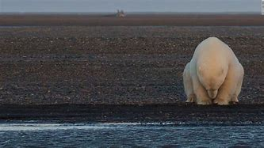
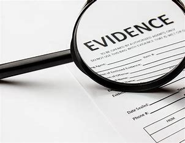

Learn More
What is Climate Change?
Climate Change is refers to a long-term shifts in temperatures and weather patterns. Such drifts can be natural due to changes in the sun's activity. But why is it getting out of control?
Click here to Learn More
Evidence
What causes the extreme Climate change in our society? What I can say is it isn't natual, and definitly isn'y due to natural causes.
Click here to Learn More
Solutions
What can you do, as a normal person in society to stop, or atleast slow down climate change? There is much more you can do than you think.
Click here to Learn More
Why Don't People Believe?
There are people in this world who just don't belive in climate change. They believe that is perfectly natural for the Earth to get this hot this quick. And if you the reader is a non believer, well....I've got news for you buddy.
Click here to Learn More
About Us
Learn about the people who helped create, design, and research all this information
Click here to Learn More
Michael
Donald Rump
Obama
Sleepy Joe